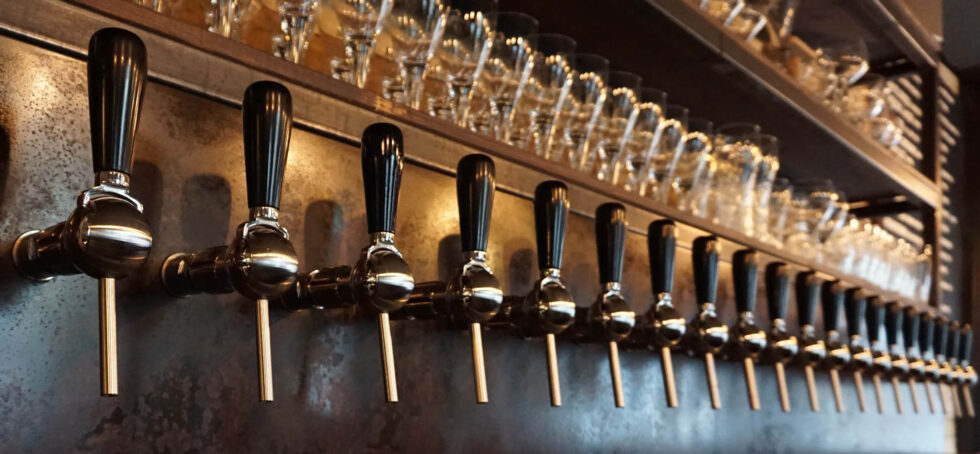
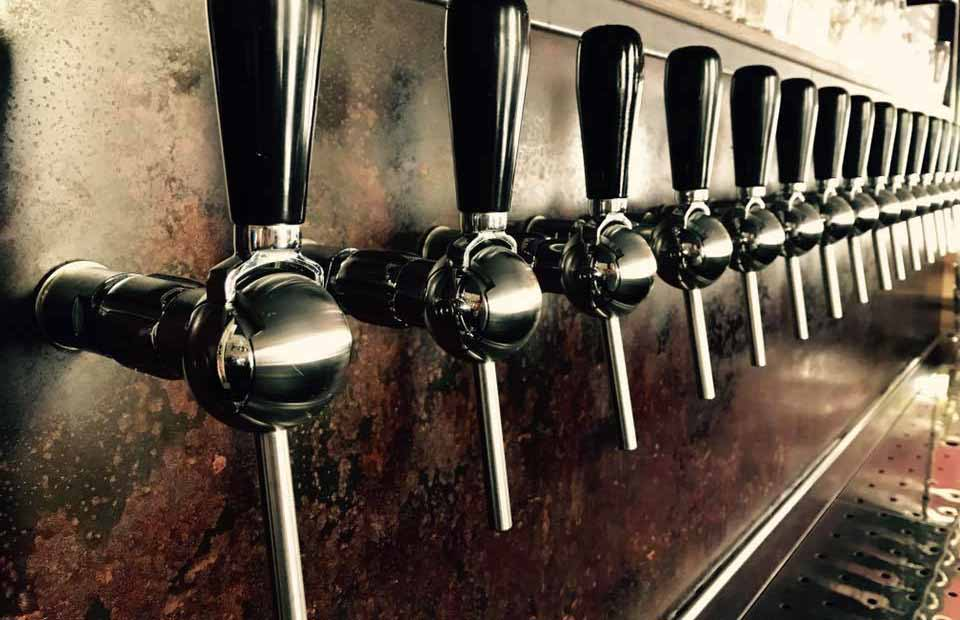

Biercafé op een hoekpand in het centrum van Delft. Met een terras dat uitkijkt op de Nieuwe Kerk, en een tapwand die steeds iets nieuws schenkt.
Vlamingstraat 2, Delft
Nu op tap
Het assortiment verandert continu, dus er is altijd iets te ontdekken. Veel IPA's, stouts en sours, en altijd een paar traditionele bieren.
Toe aan iets anders? Er staat nog meer bier op fles en blik, en een kast vol whisky.

Hallo!
Vanaf het terras voor het hoekpand heb je zicht op de Nieuwe Kerk en de historische straten van het centrum. Het is een van de zonnigste plekken in Delft.
Er zijn veel verschillende bieren van de tap en op fles, en het assortiment verandert continu. Een groot deel is gericht op IPA's, stouts en sours, maar er staan ook altijd een aantal traditionele bieren op de tap en op fles.
Daarnaast is er een rariteitenkabinet met bijzondere flessen. Je kunt heerlijk aan de bar zitten om te proeven, of onderuitzakken op een van de banken.
Bier op fles en blik
Een greep uit de koeling, met prijzen. Ook voor wie vandaag rijdt staat er genoeg klaar.
Whisky
Liever iets uit de fles zonder schuim? Deze whisky's staan achter de bar.
- Bushmills
- Buffalo Trace Bourbon
- Pig's Nose
- Auchentoshan 12 jaar
- Jura 10 jaar
- Ardbeg 10 jaar
- Cragganmore 12 jaar
- Cardhu 12 jaar
- Singleton 12 jaar
- Glenkinchie 12 jaar
- Knockando 12 jaar
- Glenmorangie 10 jaar
- Glenfarclas 12 jaar
- Highland Park 12 jaar
- Bowmore 12 jaar
- Laphroaig 10 jaar

Iets te vieren?
Wil je bij ons een borrel geven? Daar zijn verschillende mogelijkheden voor. Het café bestaat uit drie ruimtes, en twee daarvan zijn te reserveren voor grotere groepen.
Laat even weten wat je in gedachten hebt, dan kijken we samen wat past.
Langskomen
Café Het KloosterVlamingstraat 2
2611 KW Delft
06 38 01 21 44
info@cafehetklooster.nl
Openingstijden
| Maandag | 15:00 – 01:00 |
|---|---|
| Dinsdag | 15:00 – 01:00 |
| Woensdag | 15:00 – 01:00 |
| Donderdag | 15:00 – 01:00 |
| Vrijdag | 14:00 – 02:00 |
| Zaterdag | 14:00 – 02:00 |
| Zondag | 14:00 – 01:00 |